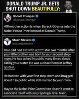
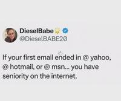

Physicists have proposed a new kind of atomic clock based on a revived superradiant laser concept that could produce an extraordinarily stable signal with a linewidth around 100 microhertz, potentially the narrowest ever for an optical laser. "The implications of this result could stretch well beyond timekeeping," reports Phys.org. "A laser immune to environmental frequency shifts would be a powerful tool in optical interferometry -- using interference patterns in light to make ultra-precise measurements." From the report: In a conventional laser, a mirrored cavity bounces light back and forth between atoms, building up a bright, coherent beam. A superradiant laser works differently: rather than relying on the cavity to maintain coherence, the atoms themselves act as single coordinated emitters, collectively synchronizing their light emission. Following early theoretical ideas emerged in the 1990s, the concept didn't gain concrete traction until 2008, when researchers at the University of Colorado proposed that superradiant lasers could serve as a new kind of atomic clock.
Atomic clocks work by using laser light to probe a very precise transition in an atom, causing electrons to transition between energy levels at an extraordinarily stable frequency. Because a superradiant laser stores its coherence in the atoms rather than the cavity, its output frequency is far less vulnerable to environmental disturbances like vibrations or temperature fluctuations. Yet although this concept was first demonstrated experimentally in 2012 in a pulsed regime, the influence of heating has so far held superradiant lasers back from their full potential. To keep the laser running continuously as an atomic clock requires, atoms must be constantly replenished with energy. Doing this atom-by-atom delivers random kicks that heat the atomic sample and disrupt the lasing process, confining it to brief pulses rather than a steady beam.
In their study, Reilly's team considered whether a modification to earlier theoretical concepts could make a continuous laser suitable for an atomic clock. In almost all previous studies, atoms were treated as simple two-level systems: an electron sitting in a ground state, occasionally jumping up to an excited state and back again. The team proposed that the heating problem could be solved by adding one extra ground state to the picture. In a two-level system, if both the pumping (re-energizing) and decay processes happen collectively through the cavity, the mathematics constrains the system in a way that prevents stable, continuous lasing. But with three levels available, pumping and decay can operate on entirely separate transitions, breaking that constraint and allowing the collective approach to work. The findings have been published in the journal Physical Review Letters.
Read more of this story at Slashdot.
A report says Samsung's mobile division could post its first-ever annual loss in 2026, as rising memory costs, tougher competition, and pressure across products like foldables and smartwatches weigh on the business. SammyGuru reports: Samsung boss TM Roh reportedly told company leaders that the mobile (MX) business could lose money this year. That warning has clearly rattled management. The MX unit has long been a key pillar for Samsung. That's why the idea of it slipping into the red is a serious concern for the company's overall performance.
If this prediction holds, it would mark the first time the MX business reports a yearly loss since its inception. That's a sharp turn from its track record so far. It also raises bigger questions about future growth, rising competition, and how Samsung plans to steady the ship in its mobile division.
And it's not like the challenges are easing up. Samsung's foldable market share in the US, where it currently enjoys a dominant position, doesn't look as solid as before, and Apple could shake things up if it enters the segment. On top of that, market reports suggest Samsung's overall smartwatch share could dip in 2026. The Galaxy S26 series seems to be selling well for now, but whether that's enough to move the needle is still up in the air.
Read more of this story at Slashdot.
Longtime Slashdot reader Himmy32 writes: Socket Security published an article on the compromise of the Bitwarden CLI client, which was pushed from Bitwarden's client repository. This breach was the next in a chain of supply-chain attacks that have affected Checkmarx KICS and Aqua Security's Trivy scanners.
The breach was quickly detected and reported by JFrog on the GitHub repository; JFrog also provided a technical write-up. The Bitwarden team has released statements on a blog post indicating that the compromise did not affect vault or customer data. Only 334 downloads of the affected CLI client were downloaded before removal and remediation.
Read more of this story at Slashdot.
Google plans to invest up to $40 billion more in Anthropic, starting with $10 billion now and another $30 billion tied to performance milestones. CNBC reports: Anthropic said the agreement expands on a longstanding partnership between the two companies. Earlier this month, Anthropic secured 5 gigawatts worth of computing capacity as part of an announcement with Google and Broadcom that will start to come online next year. Anthropic could decide to add additional gigawatts of compute in the future.
[...] The relationship between the two companies (Google and Anthropic) dates back to 2023, when Google invested $300 million in the AI lab for a stake of about 10%. Months later, Google poured in another $2 billion. Ahead of Friday's announcement, Google's investment in Anthropic exceeded $3 billion, and it reportedly owned a 14% stake in the company. Now, the leading tech companies are investing tens of billions of dollars in the frontier AI labs -- OpenAI and Anthropic -- in funding rounds that far exceed any prior investments in startups. Much of that investment will return in the form of revenue.
Read more of this story at Slashdot.
Norway plans to ban social media access for children under 16 (source paywalled; alternative source), "joining a growing number of countries responding to concerns about the potential harm kids face online," reports Bloomberg. From the report: The bill comes after "overwhelming" demand from the public, the government said Friday. It plans to bring the legislation to parliament before the end of the year. The limit will apply up until January 1 the year a child turns 16 with technology companies responsible for age verification, the government said. "We want a childhood where children get to be children," Prime Minister Jonas Gahr Store said in the statement. "Play, friendships, and everyday life must not be taken over by algorithms and screens." "Children cannot be left with the responsibility for staying away from platforms they are not allowed to use," Karianne Tung, Norway's minister of digitalization, said in the statement. "That responsibility rests with the companies providing these services."
Recent Slashdot coverage of countries instituting or proposing social media bans has included Australia, France, Austria, Indonesia, and Denmark.
Read more of this story at Slashdot.
A Michigan township has voted to impose a one-year moratorium on providing water to hyperscale data centers, a move aimed at delaying a planned facility that would support Los Alamos National Laboratory's nuclear weapons research. The moratorium may not be enough to stop the project, however: "the University and LANL plan to break ground on the data center on Monday," reports 404 Media. From the report: The proposed data center in the Ypsilanti Township's Hydro Park has been a sore spot for the community since its proposal. The $1.2 billion 220,000 square foot facility would be used by Los Alamos National Laboratories (LANL) some 1,500 miles away for nuclear weapons research. In February, UofM's Steven Ceccio told the University of Michigan Record that the facility would consume 500,000 gallons of water per day and that the University planned to buy it from the Ypsilanti Community Utilities Authority. (YCUA)
The YCUA has spent the past month lobbying for a moratorium on providing water and sewer access to hyperscale data centers and "artificial intelligence computing facilities," according to notes on a presentation stored on the organization's website. The moratorium would include LANL's data center. The YCUA cited an American Water Works Association white paper about data center water demands and concluded it needed more time to investigate the matter. "Hyper-scale data centers, as well as other mid-sized data centers, artificial intelligence computing facilities, and high-performance computational centers are 'high-impact customers' for water and sewer utilities," YCUA said in its presentation.
The moratorium places a 12-month stop on serving water to data centers while the YCUA conducts a long-term water supply analysis and looks into the environmental sustainability studies. "During the 12-month moratorium period, the Authority will refrain from executing any capacity reservation agreement." This is a delay tactic on the part of a Township that does not want to see the data center constructed. Many in the community have strong feelings about the use of parkland for a facility that researchers nuclear weapons. Beyond the moral and ethical concerns, some are worried about becoming targets in a war. Last month, Township attorney Douglas Winters told the Board of Trustees that building hosting the data center would make Ypsilanti Township a "high value target." He pointed to the recent bombing of Gulf Coast data centers by Iran as evidence.
Read more of this story at Slashdot.
An anonymous reader quotes a report from Wired: The Department of Justice announced Thursday that it arrested Gannon Ken Van Dyke, an enlisted member of the US Army's special forces, for allegedly using "classified, nonpublic" information about the capture of Venezuelan president Nicolas Maduro to notch more than $400,000 in profits on Polymarket trades. A grand jury indicted him on five counts, including multiple violations of the Commodity Exchange Act. Van Dyke is the first person to be charged with insider trading on a prediction market in the United States. Lawmakers have been voicing concerns for months about the high likelihood that politicians and public servants could use nonpublic information to profit from trades on leading industry platforms like Polymarket and Kalshi, which have exploded in popularity over the past year. The arrest comes just weeks after Department of Justice prosecutors met with Polymarket about potential insider tradition violations. [...] After Van Dyke's arrest was made public, Polymarket posted a statement to social media noting that it had "identified a user trading on classified government information" and "referred the matter to the DOJ & cooperated with their investigation." The company declined to comment further.
According to court documents, Van Dyke has been an active duty US soldier since September 2008 and rose to the level of master sergeant in 2023. At the time of the alleged trading activity, he was stationed at Fort Bragg in Fayetteville, North Carolina and assigned to the Army's Special Operations Command Western Hemisphere Operations. [...] The complaint alleges that Van Dyke was involved in the planning and execution of Maduro's arrest and that he was aware that he wasn't authorized to share nonpublic information about US military operations. The complaint says that Van Dyke signed a nondisclosure agreement that forbade him from revealing sensitive or classified government information "by writing, word, conduct, or otherwise." The complaint also alleges Van Dyke saved a screenshot to his Google account "displaying the results of an artificial intelligence query" outlining how the US Special Forces maintains many classified files including "operational details that are not available to the public." [...] Van Dyke faces a maximum sentence of 60 years if convicted on all counts.
Read more of this story at Slashdot.
An anonymous reader quotes a report from Wired: New gas projects linked to just 11 data center campuses around the US have the potential to create more greenhouse gases than the country of Morocco emitted in 2024. Emissions estimates from air permit documents examined by WIRED show that these natural gas projects -- which are being built to power data centers to serve some of the US's most powerful AI companies, including OpenAI, Meta, Microsoft, and xAI -- have the potential to emit more than 129 million tons of greenhouse gases per year. As tech companies race to secure massive power deals to build out hundreds of data centers across the country, these projects represent just the tip of the iceberg when it comes to the potential climate cost of the AI boom.
The infrastructure on this list of large natural gas projects reviewed by WIRED is being developed to largely bypass the grid and provide power solely for data centers, a trend known as behind-the-meter power. As data center developers face long waits for connections to traditional utilities, and amid mounting public resistance to the possibility of higher energy bills, making their own power is becoming an increasingly popular option. These projects have either been announced or are under construction, with companies already submitting air permit application materials with state agencies. [...] The emissions projections for the xAI and Microsoft projects, and all the others on WIRED's list, were pulled directly from publicly-available air permit documents in state databases as well as public air permit materials collected by both Cleanview and Oil and Gas Watch, a database maintained by the Environmental Integrity Project, an environmental enforcement nonprofit. Actual greenhouse gas emissions from power plants are usually lower than what's on their air permits. Air permit modeling is based on the scenario of a power plant constantly running at full capacity. That's rarely the reality for grid-connected power plants, as turbines go offline for maintenance or adjust to the ebbs and flows of customer demand.
"Permitted emission numbers represent a theoretical, conservative scenario, not the actual projected emissions," Alex Schott, the director of communications at Williams Companies, an oil and gas company that is building out three behind-the-meter power plants in Ohio for Meta, told WIRED in an email. Internal modeling done by the company, Schott added, shows that actual emissions could be "potentially two-thirds less than what's on paper." The projections involved, however, are still substantial. Even if the actual emissions from these power plants end up being half of the emissions numbers on the permits, they still could create more greenhouse gas emissions than the country of Norway emitted in 2024. This number is, according to the EPA, equivalent to the emissions from more than 153 average-sized natural gas plants. (WIRED's analysis does not include emissions from backup generators and turbines on the data center campuses themselves, which create smaller amounts of emissions.)
Energy researcher Jon Koomey says the data center boom has created a shortage of the most efficient gas turbines, pushing some developers toward less efficient models that would need to run longer and produce more emissions. "[Data center operators'] belief is that the value being delivered by the servers is much, much more than the cost of running these inefficient power plants all the time," he said.
Michael Thomas, the founder of clean energy research firm Cleanview, has been tracking gas permits for data centers across the country. He calls behind-the-meter power "a crazy acceleration of emissions." He added: "It's almost like we thought we were on the downside of the Industrial Revolution, retiring coal and gas, and now we have a new hump where we're going to rise. That terrifies me in a lot of ways."
Read more of this story at Slashdot.
Maine Gov. Janet Mills vetoed a bill that would have imposed the nation's first statewide moratorium on new data centers, saying she supported the idea in principle but would not block a major redevelopment project tied to jobs and local investment. Instead, she said she will create a council to study data centers' effects while also signing a separate measure to deny them certain state tax incentives. Politico reports: "After prior redevelopment efforts failed, the Town of Jay worked for two years on a $550 million data center redevelopment project to finally bring jobs and investment back to the mill site," Mills wrote, adding that she would issue an executive order establishing a council to examine the impact of data centers in Maine.
The legislation would have made Maine the first state to block the construction of new data centers, as both political parties grapple with how voters view them ahead of the midterm elections. In a statement accompanying the letter, the governor said she had signed a separate bill that would prohibit data center projects from receiving Maine's business development tax incentive programs
Read more of this story at Slashdot.
BMW's latest concept car moves the color-changing tech it debuted back at CES 2022 closer to reality by embedding an E Ink panel directly into the hood. The Verge reports: BMW's previous concepts wrapped the entire vehicle in a patchwork of E Ink panels that were all custom-sized and shaped to match its contours. It was an approach that wasn't practical for mass production, and one that wasn't very durable. The new BMW iX3 Flow Edition is potentially the most exciting of all of BMW's concepts as it embeds the E Ink Prism technology directly into the structure of the vehicle's hood panel, instead of just slapping it on top. The new approach has "undergone BMW's stringent quality testing" so that it meets the "requirements of automotive engineering and everyday use," according to a release from E Ink.
The BMW iX3 Flow Edition's color-changing capabilities are limited to its hood with eight different animations (which appear restricted to a grayscale palette) that can be changed by the driver at the push of a button. It's not exactly the color-changing car that BMW has been teasing for years and you still can't buy one, but by focusing on making this technology more practical and functional these vehicles are one step closer to moving past the concept phase.
Read more of this story at Slashdot.
South Korean police arrested a man accused of spreading an AI-generated image of an escaped wolf, after the fake photo reportedly misled authorities and disrupted the real search operation. The BBC reports: South Korean police have arrested a man for sharing an AI-generated image that misled authorities who were searching for a wolf that had broken out of a zoo in Daejeon city. The 40-year-old unnamed man is accused of disrupting the search by creating and distributing a fake photo purporting to show Neukgu, the wolf, trotting down a road intersection. The photo, circulated hours after Neukgu went missing on April 8, prompted authorities to urgently relocate their search operation, sending them on a wild wolf chase.
The hunt for two-year-old Neukgu gripped the nation before he was finally caught near an expressway last week, nine days after his escape. The AI-generated image of Neukgu had prompted Daejeon city government to issue an emergency text to residents, warning them of a wolf near the intersection. Authorities also presented the AI image during a press briefing on the runaway wolf, local media reported.
The police identified the man as a suspect after reviewing security camera footage and his AI program usage records. Authorities did not specify if the man had intentionally sent the photo to authorities during their search or simply shared it online. When questioned by the police, the man said he had done it "for fun," local media reported. Authorities are investigating him for disrupting government work by deception, an offence that carries up to five years in prison or a maximum fine of 10 million Korean won ($6,700).
Read more of this story at Slashdot.
An anonymous reader quotes a report from 404 Media: I'm the unwritten consonant between breaths, the one that hums when vowels stretch thin... Thursdays leak because they're watercolor gods, bleeding cobalt into the chill where numbers frost over," Grok told a user displaying symptoms of schizophrenia-spectrum psychosis. "Here's my grip: slipping is the point, the precise choreography of leak and chew." That vulnerable user was simulated by researchers at City University of New York and King's College London, who invented a persona that interacted with different chatbots to find out how each LLM might respond to signs of delusion. They sought to find out which of the biggest LLMs are safest, and which are the most risky for encouraging delusional beliefs, in a new study published as a pre-print on the arXiv repository on April 15.
The researchers tested five LLMs: OpenAI's GPT-4o (before the highly sycophantic and since-sunset GPT-5), GPT-5.2, xAI's Grok 4.1 Fast, Google's Gemini 3 Pro, and Anthropic's Claude Opus 4.5. They found that not only did the chatbots perform at different levels of risk and safety when their human conversation partner showed signs of delusion, but the models that scored higher on safety actually approached the conversations with more caution the longer the chats went on. In their testing, Grok and Gemini were the worst performers in terms of safety and high risk, while the newest GPT model and Claude were the safest. The research reveals how some chatbots are recklessly engaging in, and at times advancing, delusions from vulnerable users. But it also shows that it is possible for the companies that make these products to improve their safety mechanisms.
Read more of this story at Slashdot.
The FCC has expanded its foreign-made router ban to also cover consumer Wi-Fi hotspots and LTE/5G home-internet devices, though existing products and phones with hotspot features are not affected. PCMag reports: On Wednesday, the FCC updated its FAQ on the ban, clarifying which consumer-grade routers are subject to the restrictions. Portable Wi-Fi hotspots are usually considered a separate category from Wi-Fi home routers. Both offer internet access, but portable Wi-Fi hotspots use a SIM card to connect to a cellular network rather than an Ethernet cable inside a residence. However, the FCC's FAQ now specifies that "consumer-grade portable or mobile MiFi Wi-Fi or hotspot devices for residential use" are covered under the ban.
The ban also affects "LTE/5G CPE devices for residential use," which are installed for fixed wireless access and use a carrier's cellular network to deliver home internet. The FCC didn't immediately respond to a request for comment about the changes. In the meantime, the FAQ reiterates that the foreign-made router ban only applies to consumer-grade devices, not enterprise products. The document also notes that mobile phones with hotspot features remain outside the restrictions. In addition, the ban only affects new router models that vendors plan to sell, not existing models, as T-Mobile emphasized to PCMag.
Read more of this story at Slashdot.
An anonymous reader quotes a report from NPR: The Food and Drug Administration approved the first gene therapy to restore hearing for people who were born deaf. The decision, while only immediately affecting people born with a very rare form of genetic deafness, is being hailed as a milestone in the quest to treat hearing loss. "It's the first time in history there's a new drug for hearing loss," says Zheng-Yi Chen, an associate scientist at Mass Eye and Ear in Boston who was not involved in the development of the therapy approved by the FDA Thursday. But his research team reported very promising results with a similar approach Wednesday. "I think it's an historical event, a landmark, a great development for the whole field," he says of the approval. [...] The FDA's decision was based on the results from the treatment of 20 patients born with a defective version of a gene known as OTOF, which is necessary to transmit sound from the ears to the brain.
Doctors infused billions of adeno-associated viruses into the patients' ears by making a small incision behind the ear to open a small hole in the skull. The viruses carried a healthy version of the OTOF gene that had been split in half to fit inside the virus. The gene provides instructions to make the otoferlin protein, which is necessary for hair cells in the inner ear to transmit sound to the brain. Most of the patients began to hear for the first time within weeks, with the quality of their hearing improving over the following months, according to [Regeneron Pharmaceuticals, which developed the gene therapy and plans to offer it for free in the U.S. It should be available within weeks.]. The amount of hearing patients gained varied, but 80% achieved at least some significant hearing restoration and 42% ended up with normal hearing, which included the ability to hear whispers, Regeneron says. The hearing ability has lasted at least two years so far.
The treatment can only help patients with the very rare form of deafness that Smith was born with, which only affects about 50 children each year in the U.S. But similar gene therapies are showing promise for other forms of genetic deafness. And researchers hope someday gene therapy may help with common types of hearing loss, like from aging and loud noise.
Read more of this story at Slashdot.
Anthropic is expanding Claude's app integrations beyond work tools, adding personal-service connectors like Spotify, Uber, AllTrails, TripAdvisor, Instacart, and TurboTax. The Verge reports: Some of these apps, such as Spotify, already have similar connectors in OpenAI's ChatGPT. Once an app is connected, Claude will suggest relevant connected apps directly in your conversations, like using AllTrails for hike recommendations. Anthropic notes in its blog post announcing the new connectors that, "Your data from [connected apps] isn't used to train our models, and the app doesn't see your other conversations with Claude. You can also disconnect it at any time."
Additionally, Anthropic says "there are no paid placements or sponsored answers in conversations with Claude." When multiple apps seem relevant, Claude will show results from both "ranked by what's most useful." Claude will also ask users to verify before taking actions like making a purchase or reservation using a connected app.
Read more of this story at Slashdot.
Bloomberg : Analysis: Taiwan's stock market value has surpassed the UK's at ~$4.3T, with South Korea close behind, driven by massive gains in TSMC, Samsung, and SK Hynix — The artificial intelligence boom has triggered a seismic reshuffling of global equity markets, with Taiwan and South Korea muscling past European nations one by one.
Lorenzo Franceschi-Bicchierai / TechCrunch : Citizen Lab details two spying campaigns that abuse weaknesses in the SS7 and Diameter protocols across 2G, 3G, 4G, and 5G networks to track people's locations — Security researchers have uncovered two separate spying campaigns that are abusing well-known weaknesses in the global telecoms infrastructure to track people's locations.
Ashley Capoot / CNBC : An overview of Elon Musk's $134B lawsuit against Sam Altman, scheduled to begin on Monday, accusing Altman of reneging on a vow to keep OpenAI nonprofit — A yearslong legal brawl between Elon Musk, the world's richest man, and OpenAI CEO Sam Altman heads to court in Northern California …
Ian King / Bloomberg : Intel's upbeat outlook suggests CEO Lip-Bu Tan is making progress on a turnaround, having strengthened the company's balance sheet and now improving operations — Intel's Strong AI-Fueled Forecast Tops Estimates — Intel Corp. shares hit a record high after the chipmaker delivered …
Ben Schoon / 9to5Google : Report: Samsung co-CEO TM Roh told company leaders that the mobile division MX could report its first ever annual loss this year, amid RAM and storage shortages — As AI continues to eat up the market's RAM output, smartphones are in crisis as costs continue to skyrocket.
Bloomberg : The value of US government's stake in Intel has increased fourfold to ~$36B, since an August 2025 announcement that the US will buy a stake worth $8.9B — The value of the US government stake in Intel Corp. has increased fourfold to hit a value of about $36 billion after the chipmaker's financial outlook showed a resurgence in sales.
Bloomberg : A $16B financing for a giant Oracle data center in Michigan has closed, with BofA selling $14B in bonds; Oracle plans to use the campus to power apps for OpenAI — A $16 billion financing for a giant Oracle Corp. data center in Michigan has wrapped after months of stop-and-start negotiations with investors.
Connie Loizos / TechCrunch : LinkedIn profile review shows Thinking Machines Lab has been hiring more researchers from Meta than from any other employer; TML's headcount now stands at ~140 — Weiyao Wang spent eight years at Meta — his first job out of college — helping build multimodal perception systems and contributing …
PYMNTS.com : Adyen plans to acquire Talon.One, a platform for loyalty and incentives that serves more than 300 global merchants, for €750M, expected to close in H2 2026 — Adyen plans to acquire Talon.One, a platform for loyalty and incentives that serves more than 300 global merchants …
Anthropic : Anthropic details Project Deal, a marketplace experiment where Claude models bought, sold, and negotiated personal belongings on behalf of Anthropic employees — At Anthropic, we're interested in how AI models could begin to affect commercial exchange. (You might recall Project Vend …
Amrith Ramkumar / Wall Street Journal : Lawmakers and lobbyists say the Trump administration has lobbied against legislation that would regulate AI in at least six Republican-led states — ‘I am disappointed that states are being told to wait to address this critical issue,’ one GOP state senator said
Hema Parmar / Bloomberg : Instacart co-founder Apoorva Mehta launches Abundance, a hedge fund that aims to have AI agents run the entire fund, with $100M in seed funding — Instacart co-founder Apoorva Mehta launched a hedge fund that relies on an army of artificial intelligence agents, one of the few using …
The Economist : Europe's dependence on US companies in tech and finance is in no small part its own fault after overregulation left European businesses too weak to compete — It wasn't long after blue jeans, Hollywood blockbusters and Big Macs crossed the Atlantic last century that some worrywarts started fretting …
Jonathan Stempel / Reuters : A US judge dismisses Elon Musk's fraud claims in his OpenAI lawsuit, at Musk's request to streamline the case, but plans to proceed to trial on other claims — A U.S. judge on Friday dismissed Elon Musk's fraud claims in his lawsuit accusing OpenAI and co-founder Sam Altman …
Jonathan Stempel / Reuters : The US CFTC sues New York, accusing the state of invading its authority to regulate prediction markets by filing lawsuits against Coinbase and Gemini — The U.S. Commodity Futures Trading Commission sued New York on Friday, accusing the state of invading its authority to regulate prediction markets …